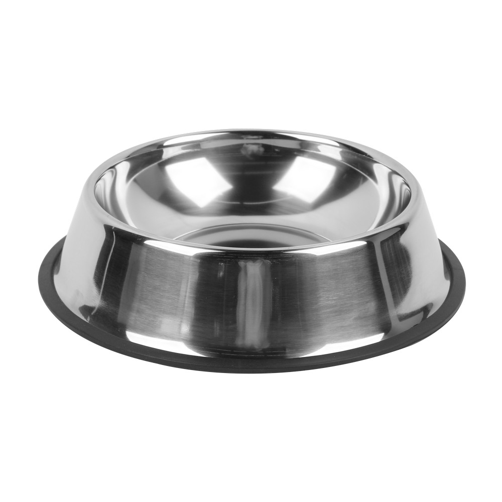

Marketplace
Contacto



Plato de comida para mascotas
Ofrece a tu mascota un espacio cómodo y práctico para disfrutar de sus alimentos. Ideal para facilitar su alimentación diaria.
Uso: Alimentación
Perfecto para servir comida a perros y gatos de manera sencilla y organizada.
Característica: Práctico
Su diseño permite colocar los alimentos de tu mascota de forma cómoda y accesible.
Beneficios
Ayuda a mantener la comida organizada en un solo lugar y facilita la hora de alimentar a tu mascota.
¡Haz más cómoda su hora de comer!
Un accesorio esencial para el cuidado y la alimentación diaria de tu mejor amigo.